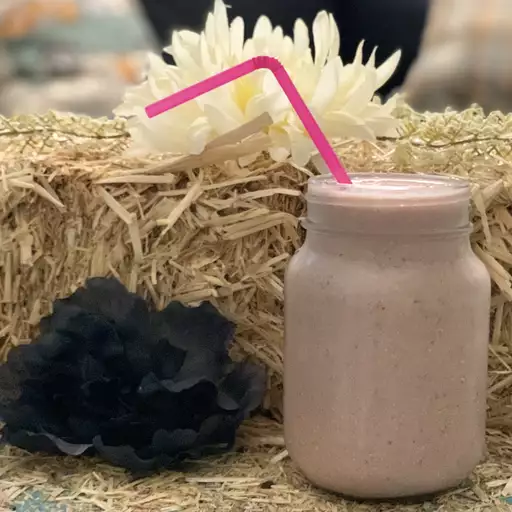

Strawberry Oatmeat Smoothie Recipe

Ingridients Needed
- 1 cup soy milk
- ½ cup rolled oats
- 14 frozen strawberries
- 1 banana, broken into chunks
- 1 ½ teaspoons white sugar (Optional)
- ½ teaspoon vanilla extract (Optional)
Directions To Make
Step 1
- Gather ingredients.
Step 2
-
Blend soy milk, oats, strawberries, and banana in a blender until
smooth. Add sugar and vanilla and blend again until smooth.
Step 3
- Pour into glasses and serve.
Home